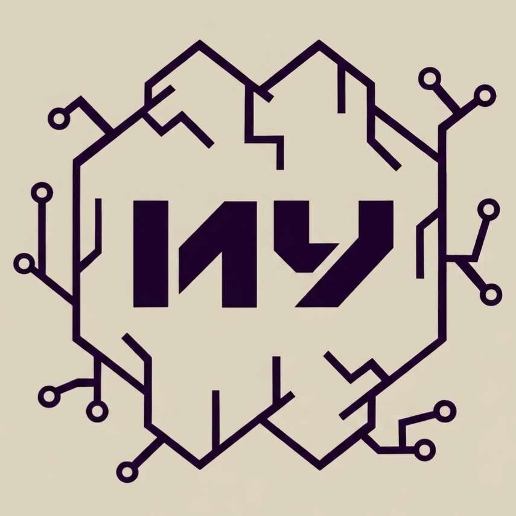
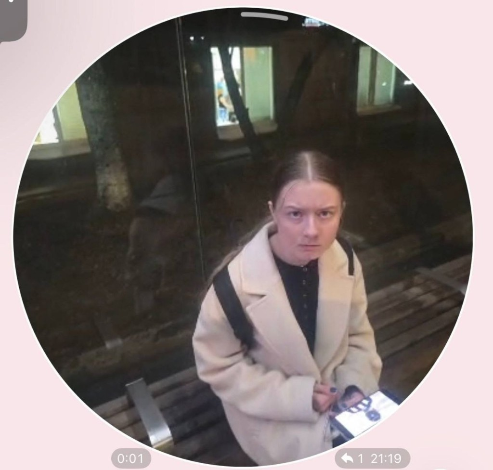
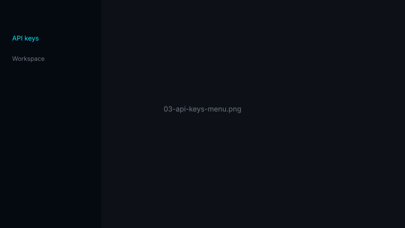
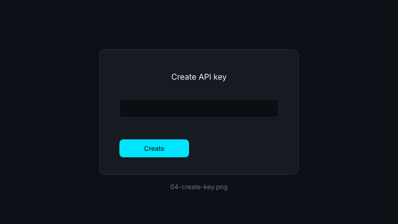

Миронов Никита
Разработчик

topiteneninglmsabce_и_гаяна
Информация о СУБД topiteneninglmsabce_и_гаяна
topiteneninglmsabce_и_гаяна — учебная система управления базами данных с десктопным клиентом, консольным интерфейсом и поддержкой Text2SQL через Mistral AI.
dbserver с HTTP APIdbcli с командой \ai для запросов на русском языкеНад проектом topiteneninglmsabce_и_гаяна работают:
Миронов Никита
Разработчик
Коротенко Андрей
Разработчик
Немцов Иван
Разработчик
Федяев Александр
Разработчик

Ахметзянова Гаяна
Разработчик
Колосов Максим Игоревич
Научный руководитель
Скачайте сборку клиента для вашей операционной системы. После публикации релизов файлы появятся в папке releases/ или по ссылкам GitHub Releases.
Сборка для Windows (64-bit), файл .exe
Сборка для Linux (x64)
Скачать скороWindows: скачайте .exe и запустите установщик или исполняемый файл.
Linux: скачайте бинарник, выдайте права на выполнение и запустите:
chmod +x topiteneninglmsabce-linux
./topiteneninglmsabce-linuxДля Text2SQL настройте API-ключ Mistral — см. вкладку Mistral API.
Для функции Text2SQL (перевод запросов с русского в SQL) каждому пользователю нужен личный API-ключ Mistral. Ниже — пошаговая инструкция.
Перейдите на официальный сайт:

La Plateforme — личный кабинет для API:

Используйте email или способ входа, который предложит сайт (Google, GitHub и т.д.).

В боковом меню найдите пункт API keys (или Workspace → API keys).
Нажмите Create new key / Add API key, задайте имя (например topiteneninglmsabce).

Ключ показывают один раз — сразу сохраните его в надёжное место. На скриншотах для сайта используйте замазанный ключ.

Один из способов:
mistral_api_key в корне проекта (одна строка, без кавычек)export MISTRAL_API_KEY="ваш-ключ"mistral_api_key указан в .gitignore — не коммитьте его в репозиторий.